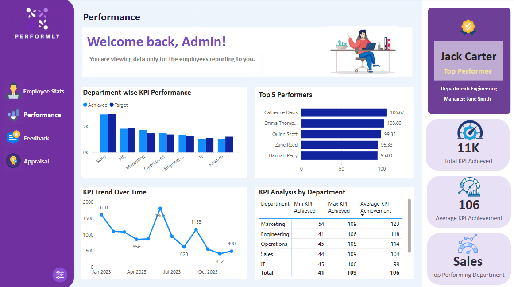

SpyFi is an end-to-end Fraud Detection and Financial Intelligence dashboard built in Power BI, designed to monitor transaction behavior, identify suspicious activities, and assist decision-makers in mitigating financial risk.

A SQL-based data analytics project that detects suspicious transactions using stored procedures, views, and scheduled automation. Designed to flag fraudulent banking activities and support proactive fraud monitoring. Includes schema design, data modeling, and automation using SQL Server Agent.

Designed for business leaders to track KPIs, spot top performers, and identify trends with row-level security. Built using Power BI, DAX, and Power Query.

Built a consolidated Power BI report for a retail client. Combined sales, inventory, and purchase data with custom DAX KPIs and conditional formatting.
A Power BI mobile-friendly dashboard that empowers individuals to track and manage their personal finances with ease. SpendSense delivers clear, interactive insights into income, expenses, and savings, helping users make smarter financial decisions.